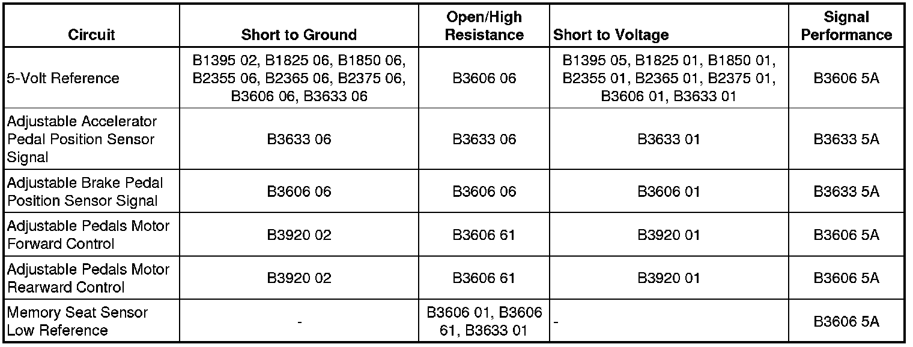

B3606
DTC B3606
Diagnostic Instructions
* Perform the Diagnostic System Check - Vehicle (Initial Inspection and Diagnostic Overview) prior to using this diagnostic procedure.
* Review Strategy Based Diagnosis (Initial Inspection and Diagnostic Overview) for an overview of the diagnostic approach.
* Diagnostic Procedure Instructions (Initial Inspection and Diagnostic Overview)provides an overview of each diagnostic category.
DTC Descriptors
DTC B3606 01
- Pedals Horizontal Position Sensor Circuit Short to Battery
DTC B3606 06
- Pedals Horizontal Position Sensor Circuit Short to Ground or Open
DTC B3606 5A
- Pedals Horizontal Position Sensor Direction of Motor Reversed
DTC B3606 61
- Pedals Horizontal Position Actuator Stuck
Diagnostic Fault Information

Circuit/System Description
The memory seat module (MSM) monitors the location of the adjustable pedals using the accelerator pedal position sensor and the brake pedal position sensor. The adjustable pedals position sensors are supplied with 5-volt reference and ground circuits from the MSM. The position sensor signal circuits are referenced from ground within the MSM. The signal voltage monitored by the module ranges from 0.22-4.75 volts and is determined by the wiper location on the resistor within the position sensor.
Conditions for Running the DTC
The memory seat module must be powered.
Conditions for Setting the DTC
B3606 01
If the MSM sees the analog input from this sensor is greater than 4.75 volts, the sensor will be considered out of range and the MSM will set this DTC.
B3606 06
If the MSM sees the analog input from this sensor is less than 0.22 volts, the sensor will be considered out of range and the MSM will set this DTC.
B3606 5A
This DTC will set, if the MSM is controlling a motor in one direction and it's position sensor is tracking the motor in the opposite direction. The sensor is either mounted or wired incorrectly, or the polarity of the motor control circuits are reversed.
B3606 61
This DTC will set, if the MSM sees a adjustable pedal switch input but does not see voltage changes from the position sensor signal circuits.
Action Taken When the DTC Sets
Memory recall functions will be suspended.
Conditions for Clearing the DTC
* The current DTC will clear and set to history, when the MSM sees the analog input from the sensor as between 0.22 volt and 4.75 volts and the power mode changes to OFF then back to ACC or RUN.
* The history DTC will clear after 50 consecutive fault-free ignition cycles have occurred.
Diagnostic Aids
* The MSM may be referenced as the Driver Position Module.
* All seat and adjustable pedal position sensors use common ground and 5-volt reference circuits.
* If the 5-volt reference circuit is shorted to voltage multiple position sensor codes will set.
* If the 5-volt reference circuit is shorted to ground multiple position sensor codes will set.
* If the sensor ground circuit is open multiple codes may set.
Reference Information
Schematic Reference
* Adjustable Pedal Schematics ([1][2]Electrical Diagrams)
* Driver Seat Schematics (Driver Seat Schematics)
Connector End View Reference
Component Connector End Views (Connector Views)
Description and Operation
Adjustable Pedals Description and Operation (Description and Operation)
Electrical Information Reference
* Circuit Testing (Component Tests and General Diagnostics)
* Connector Repairs (Component Tests and General Diagnostics)
* Testing for Intermittent Conditions and Poor Connections (Component Tests and General Diagnostics)
* Wiring Repairs (Component Tests and General Diagnostics)
Scan Tool Reference
Control Module References (Programming and Relearning)for scan tool information
Circuit/System Verification
Ignition ON, observe the scan tool Driver Position Module, Adjustable Pedals position sensor parameters. The readings should be between 1.5 volts and 3.4 volts and change while adjusting the pedals position.
Circuit/System Testing
B3606 01 and B3606 06
1. Ignition OFF, disconnect the (C207) inline harness connector.
2. Ignition OFF, test for less than 7 ohms of resistance between the low reference circuit terminal 13 and ground.
• If greater than the specified value, test the low reference circuit for an open/high resistance. If the circuit tests normal, replace the MSM.
3. Ignition ON, test for 4.8-5.2 volts between the 5-volt reference circuit terminal 2 and ground.
• If less than the specified range, test the 5-volt reference circuit for a short to ground or an open/high resistance. If the circuit tests normal, replace the MSM.
• If greater than the specified range, test the 5-volt reference circuit for a short to voltage. If the circuit tests normal, replace the MSM.
4. Ignition OFF, remove the 5-volt reference circuit terminal 2 from the MSM side of the connector.
5. Disconnect the (C206) inline harness connector.
6. Remove the position sensor signal circuit terminal 16 from the MSM side of the connector.
7. Connect the (C206, C207) inline harness connectors.
8. Ignition ON, verify the scan tool Adjustable Brake Pedal Sensor parameter is less than 0.45 volts.
• If greater than the specified range, test the signal circuit for a short to voltage. If the circuit tests normal, replace the MSM.
9. Install a 3A fused jumper wire between the signal circuit terminal 16 and the 5-volt reference circuit terminal 2. Verify the scan tool Adjustable Brake Pedal Sensor parameter is greater than 4.75 volts.
• If less than the specified value, test the signal circuit for short to ground or an open/high resistance. If the circuit tests normal, replace the MSM.
10. Test the brake pedal position sensor circuits between the inline harness connector and the sensor for the following conditions:
* An open
* A short to ground
* A short to voltage
• If all circuits test normal, test or replace the adjustable brake pedal sensor.
B3606 61
1. Ignition ON, verify that no other adjustable pedal DTCs are set.
• If other adjustable pedal DTCs are set, diagnosis those DTCs first.
2. Ignition OFF, disconnect the X207 inline harness connector.
3. Remove the motor control circuits terminal 11 and terminal 12 from the MSM side of the connector.
4. Connect the X207 inline harness connector.
5. Connect a test lamp between the adjustable pedal motor control circuits terminal 11 and terminal 12 on the MSM side of the connector.
6. Ignition ON, verify that a test lamp illuminates while pressing the adjustable pedals switch in both directions.
• If the test lamp does not illuminate, test the motor control circuits for an open/high resistance. If the circuits test normal replace the MSM.
7. Test the motor control circuits between the inline harness connector and the adjustable pedal motor for an open/high resistance.
8. If all circuits test normal, test or replace the adjustable pedal motor.
Repair Instructions
Perform the Diagnostic Repair Verification (Verification Tests) after completing the diagnostic procedure.
* Brake Pedal Assembly Replacement (LHD) (Brake Pedal Assembly Replacement (LHD))Brake Pedal Assembly Replacement (RHD) (Brake Pedal Assembly Replacement (RHD))
* Control Module References (Programming and Relearning)for the memory seat module replacement and setup procedures